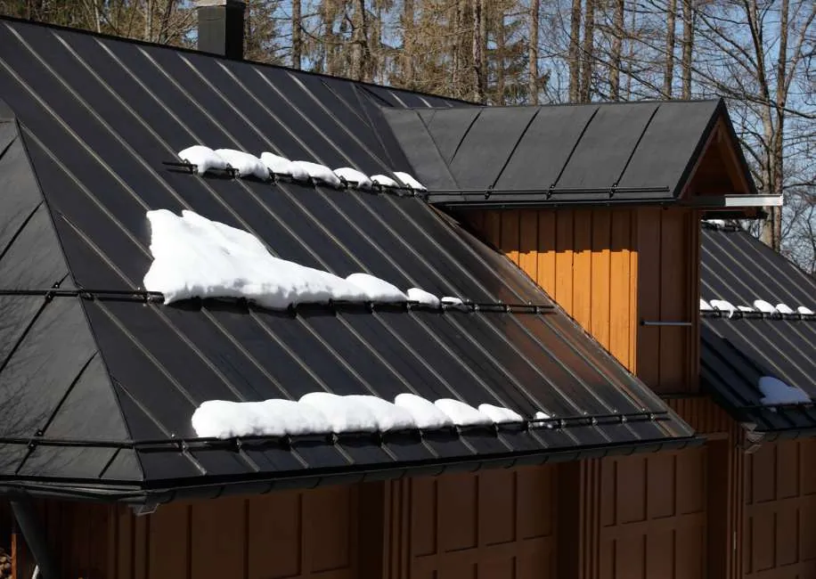

When you need a new roof, you’re likely looking for more than just a way to keep the rain out. You want a well-rounded material that gives multiple benefits, like reducing your energy bills or improving your home’s curb appeal.
Metal roofing in Utah provides all of these benefits and then some, picking up the slack left by less reliable materials like asphalt shingles. Sadly, many homeowners don’t know about metal roofing benefits.
We’re going to bust a few myths about metal roofing, explore its pros and cons, and get you closer to the roof you’ve always wanted.
3 Metal Roofing Myths You Need to Know
Worried that your metal roof may be more trouble than it’s worth? Many homeowners miss out on the benefits of metal roofing in Utah because of these major myths.
Metal Roofing Attracts Lightning
Since metal conducts electricity, you may fear that your metal roof could attract lightning during a storm. However, it’s important to note that lightning prefers extremely tall objects over metal.
Since lightning is more likely to strike closer to its original cloud, tall buildings or trees are bigger magnets than a relatively small and low roof.
Metal Roofing Dents Easily
Metal roofing is much more durable than people realize. While dents are possible from extremely large hail, the average metal roof will maintain its appearance easily over the years.
Metal Roofing is Expensive
Metal roofing is expensive in the short term, but very cost-effective in the long term. Let’s take a look at the financial benefits below.

The Pros and Cons of Metal Roofing in Utah
While we’re more than happy to sing the praises of energy-efficient and long-lasting metal roofing, it’s still not for everyone. Take a look at these pros and cons to see whether this option would suit your needs best.
Pros
Long-Lasting
Whether you plan on living in your house for a long time or want to sell it in the future, a roof that lasts more than pays for itself. The average metal roof can last between 40 to 80 years.
Weather Resistant and Durable
Utah’s dry climate can do a number on weaker roofs, ranging from heat damage to the occasional round of hail. Metal roofing can hold up to extreme temperatures or physical damage without warping or weakening.
Energy Efficient
If you’re tired of spending more on air conditioning during Utah’s sweltering summers, a metal roof will reduce your costs over time. Metal naturally reflects sunlight, keeping extra heat away from your home with no extra effort on your part.
Fire and Water Resistant
Utah experiences many wildfires, particularly during hotter weather, and it can get decent snowfall depending on the year. Metal roofing in Utah is not only a fire-resistant option, but there’s no risk of mold build-up from water exposure.
Low Maintenance
Unlike a wooden roof, which needs regular resealing and inspection to avoid degradation, metal roofing is much simpler. Its natural resistance to scratches, dents, mold, and heat damage means you can keep maintenance to a minimum.
Cons
Higher Upfront Cost
Metal roofing will cost more per square foot compared to wood or asphalt, sometimes three or four times higher on average. However, the durability, energy efficiency, and longevity over the decades will more than balance out the higher upfront cost.
Snow Retention
As a metal roof heats up after heavy snowfall, a thin layer of meltwater can form between the snow and the metal. This creates a slippery surface in which large piles of snow can slide off suddenly. This can lead to property damage to gutters or anything below the roof.
More Noisy Than Other Materials
Some homeowners may find the higher noise level of a metal roof to be a little irritating, especially from hail. Utah receives very little rain overall, so this issue will be minor.
May Not Match Your Aesthetic
Do you prefer the look of asphalt shingles or clay tiles? While metal roofing in Utah can take on many different colors and textures, it still may not fit your aesthetic.
Needs Specific Installation Experience
Not just any roofing company can install a high-quality, long-lasting metal roof. Some homeowners may become frustrated trying to locate a specialized installation crew for their home.
5 Important Considerations Before Installing a Metal Roof
Interested in a metal roof and wondering what your next steps are? Before you reach out to a professional, take into account these smaller details to make sure you get the most out of your investment.
- Metal roofing works best on specific slopes. Low-pitch roofs may require special panels or underlayment.
- HOAs may restrict certain colors or styles.
- Proper installation is key to a long-lasting roof since temperature changes can expand and contract the metal.
- Additional insulation can help with heat transfer or condensation issues.
- The appearance can be altered by panel size, seam type, and thickness.
Frequently Asked Questions About Metal Roofing in Utah
A metal roof is a fantastic investment to make for your home. Check out these common questions before reaching out to our professional installation crew.
Is a Metal Roof Cheaper Than Shingles or More Expensive?
Shingles are cheaper than a metal roof upfront, but aren’t as durable and often need replacing in the long term. A metal roof’s higher upfront cost is offset by its energy savings and durability.
How Do I Maintain a Metal Roof?
You can maintain a metal roof by tightening loose screws, trimming any nearby tree branches, and checking for rare dents after a heavy hailstorm. You should also schedule a yearly inspection from a roofing professional.
Can a Metal Roof Be Installed Over Existing Shingles?
Yes, you can have a metal roof installed over existing shingles. However, local building codes or the professional opinion of a roofing contractor may recommend a complete replacement.
Enjoy Metal Roofing in Utah With American Roofing
Metal roofing requires specialized knowledge and the most durable materials. American Roofing has been helping homeowners enjoy high-quality roofing services since 1954.
Our superior craftsmanship and 5-year roof warranty are just a few reasons why Utah residents turn to us time and time again. Reach out to us today for a free quote on your metal roof.